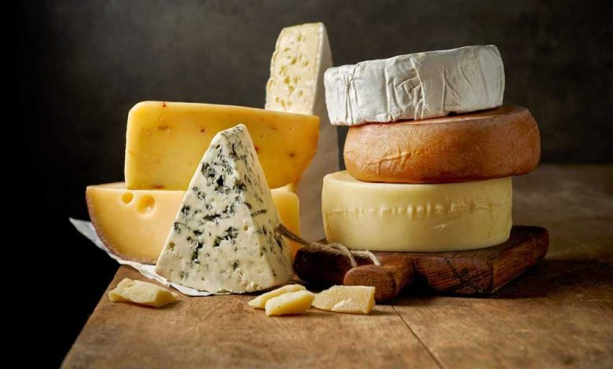
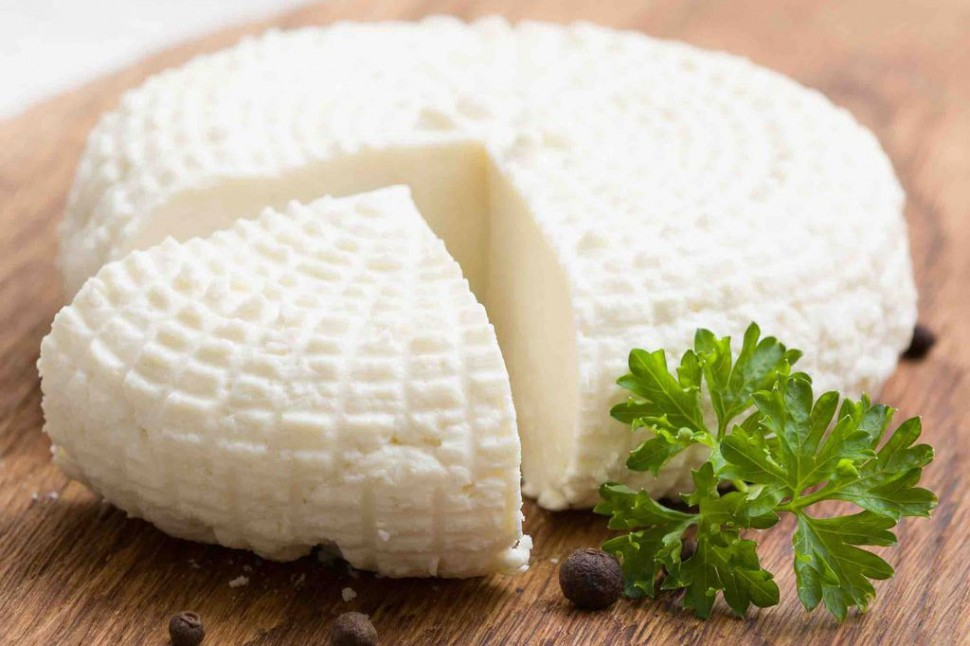
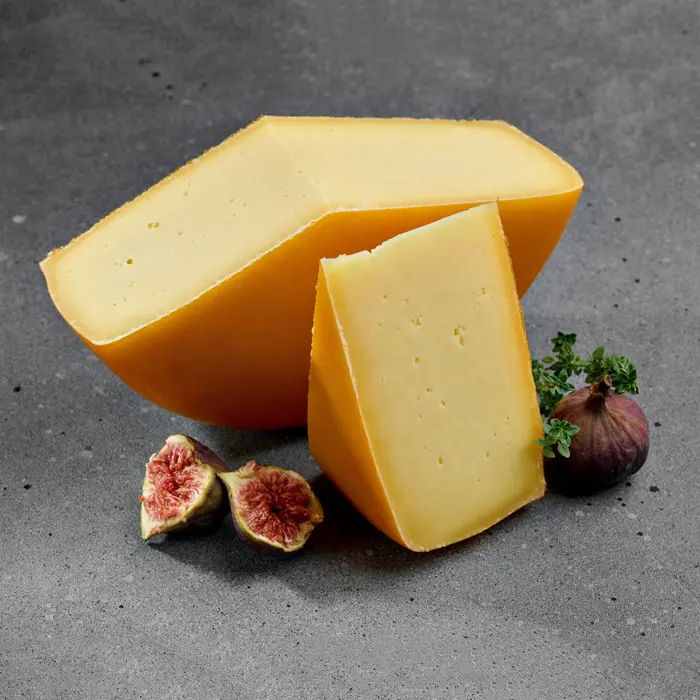
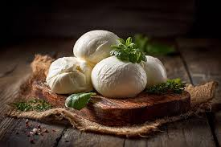
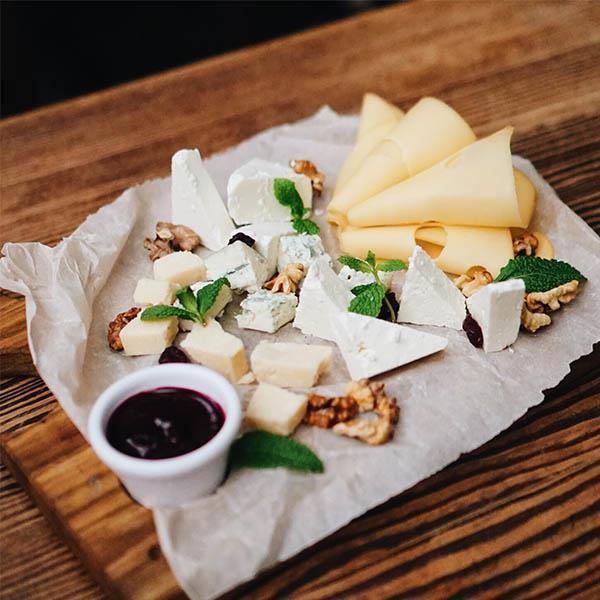

Ми виготовляємо сир вручну з молока власних корів у серці Карпат. Кожна голівка — це мистецтво, перевірене часом і природою.

Ми не просто виробляємо сир — ми зберігаємо традиції карпатського сировіння для наступних поколінь.
Лише свіже молоко від власних корів
Рецептури 200+ років від роду до роду
Без консервантів. Лише природній процес
По всій Україні у термосумці 24–48год.

Хіт продажівТрадиційний ропний сир зі свіжого овечого молока. Солоний, пікантний...

Класична голландська гауда за карпатською рецептурою. Вершковий смак...

Свіжа моцарела, виготовлена щоранку. Ніжна, молочна, тане в роті...

НовинкаДобірка 5 видів сирів з горіхами, виноградом та джемом. Ідеально для гостей...
Витриманий 12 місяців. Зернистий, з горіховим присмаком. Справжня класика...
Бринза з ароматними карпатськими травами. Неповторний, пряний смак гір...
Щоранку збираємо свіже молоко від корів на гірських пасовищах, перевіряємо якість та жирність.
М'яка пастеризація зберігає корисні властивості молока та природний аромат карпатських трав.
Натуральні закваски. Витримка від 2 тижнів до 2 років у спеціальних умовах.
Кожна голівка перевіряється майстром вручну перед відправкою замовнику.
Виробництво кожного сиру — це ретельний, трудомісткий процес. Ми не поспішаємо — адже якість важливіша за швидкість.
Неймовірний гауда! Купую вже третій рік поспіль — смак завжди стабільний і насичений. Рекомендую всім друзям.
Замовляємо бринзу та моцарелу для нашого ресторану. Якість чудова, доставка завжди вчасно. Клієнти в захваті!
Подарувала набір сирів на день народження — всі були вражені! Особливо пармезан з горіховим присмаком.
Будьте першими, хто дізнається про нові сорти та сезонні пропозиції.